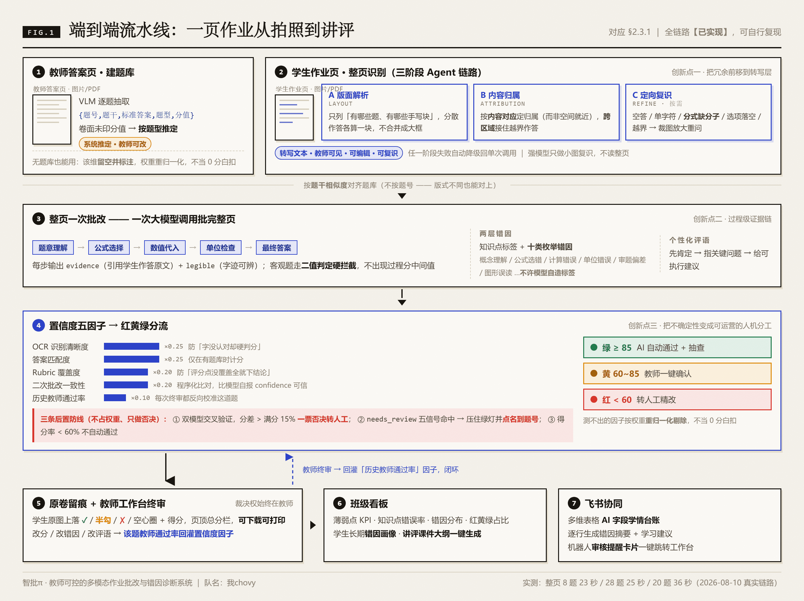
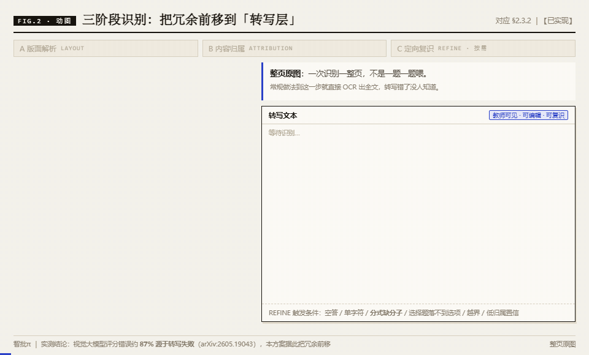
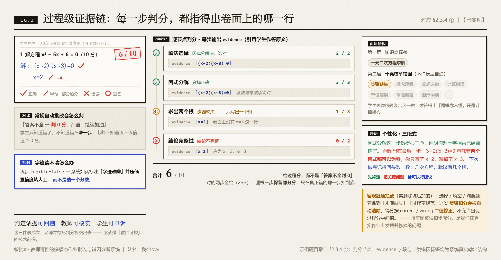
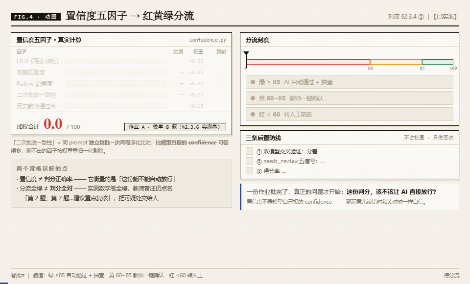
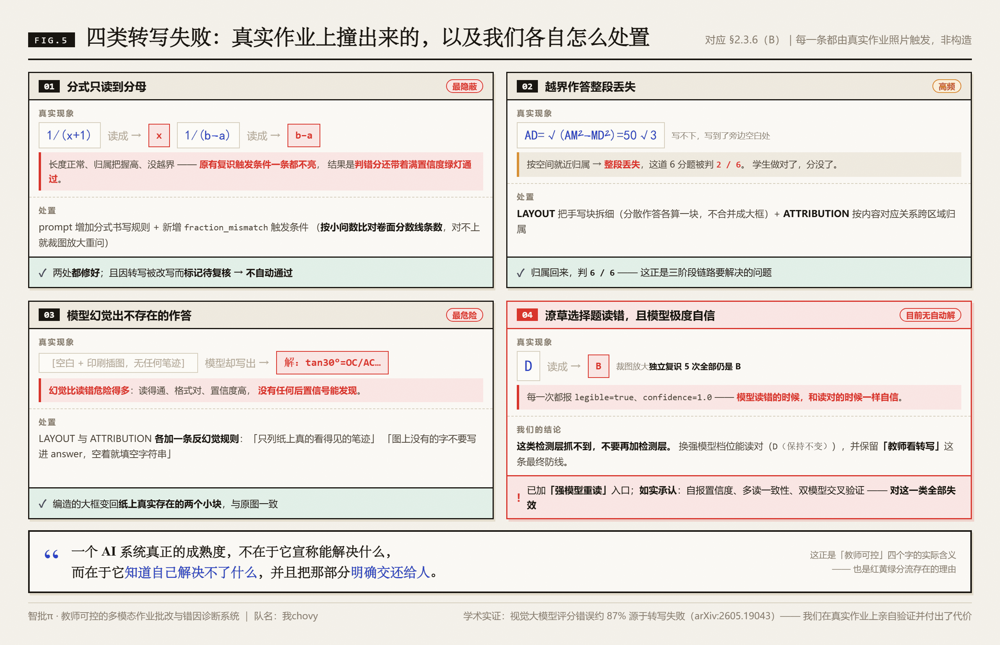
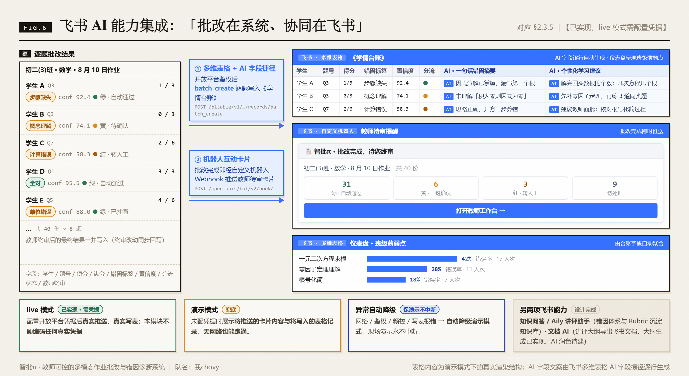

智批π · 方案配图预览
共 6 张（4 静态 + 2 动图），已插入
docs/【40强赛】…系统.md 的 §2.3 各小节。
源码在 tools/figures/*.html，改完用
python render.py shot <html> <out.png> <宽> <高> 2 /
python render.py frames <html> <out.gif> <宽> <高> <帧数> <fps> 重出。
FIG.1端到端流水线总览§2.3.1 · f1-pipeline.png

双入口 → 三阶段识别 → 整页批改 → 五因子分流 → 教师终审回灌 → 看板与飞书。
FIG.2三阶段识别链路（动图）§2.3.2 · g1-recognize.gif · 52 帧 / 6.5 秒

LAYOUT 定位手写块 → ATTRIBUTION 把越界作答跨区域归属回题 3 → REFINE 裁图放大把 x 修正为 1/(x+1)。
FIG.3过程级证据链§2.3.4① · f2-evidence.png

原卷批改痕迹 + Rubric 逐节点 evidence + 两层错因 + 三段式评语，6/10 给过程分。
FIG.4置信度五因子与红黄绿分流（动图）§2.3.4② · g2-confidence.gif · 60 帧 / 7.5 秒

五因子加权 92.4 落绿桶 → 三条防线放行；换一份 89.8 被双模型交叉验证一票否决 → 教师终审回灌。
FIG.5四类转写失败与处置§2.3.6(B) · f3-failures.png

分式只读分母 / 越界丢失 / 模型幻觉（均已修）+ 潦草选择题（目前无自动解，如实承认）。
FIG.6飞书 AI 能力集成§2.3.5 · f4-feishu.png

多维表格 AI 字段学情台账 + 机器人审核卡片 + 仪表盘薄弱点；live / 演示双轨与异常自动降级。